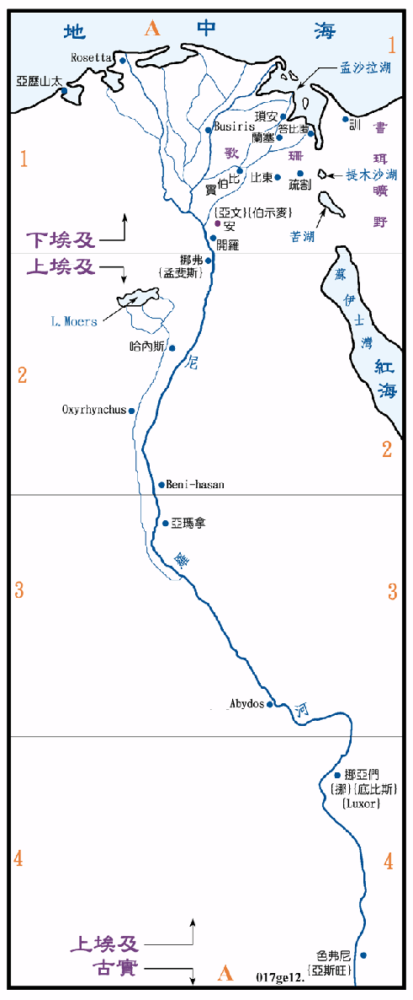

| 圣经 | 说明 |
|---|---|
| 创12:10-13:1 | 因南地有 荒，亚伯兰带着家人去埃及，不久再回到伯特利。(参看创图04) |
| 创16:1 | 亚伯兰的妾夏甲是埃及人。 |
| 创37:25 | 约瑟被卖给以实玛利人，又被带到埃及，再给人为奴。(参看创图11) |
| 创41:41 | 法老派约瑟治理埃及全地。 |
| 创41:45 | 法老将安城祭司的女儿给约瑟为妻。 |
| 创41:48 | 埃及地的七个丰年一完，七个荒年就来了。 |
| 创46:27 | 雅各全家从迦南地来到埃及，共有七十七人。(参看创图11) |
| 创47:11 | 法老王将歌珊地赐给雅各一家，他们在那里置产，并生养众多。 |
埃及是我们都十分熟悉的一个文明古国，圣经中时常提到它，它一直都与以色列人有十分密切的关系，它的势力经常到达迦南地，有时视迦南为其属国，有时直接统治，在迦南有他们长期的据点，如迦萨、米吉多、伯善等。埃及也经常收容迦南地的难民，有时也支持迦南的叛党。
古代的埃及可以说就是尼罗河，人民集中河的两岸，因河谷外都是沙漠，故不易有外敌的侵扰。国土南从亚斯旺起，北迄至三角洲，因可全程通航，交通方便，故有利於统一，而且尼罗河每年定期泛滥，带来了肥沃的泥土，所以农产丰富，是有名的谷仓，因有这些得天独厚的条件，所以早在五、六千年前，就已有了高度的文明产生，埃及除了着名的建 和古文化之外，他的武力有时到达幼发拉底河岸，并与亚述、美尼坦和赫等帝国争雄。
埃及常分裂成南北两个王国，下埃及就是尼罗河三角洲，上埃及就是现今开罗以南，北到第一瀑布处的亚斯旺城间的尼罗河河谷。